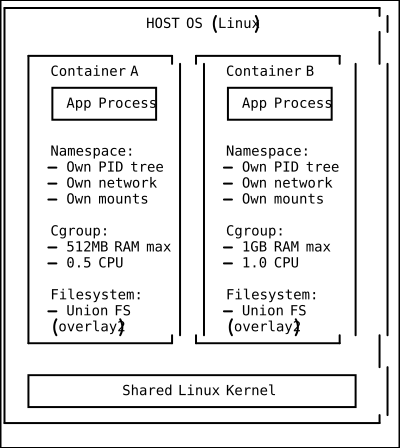
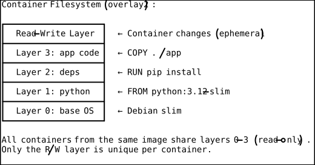
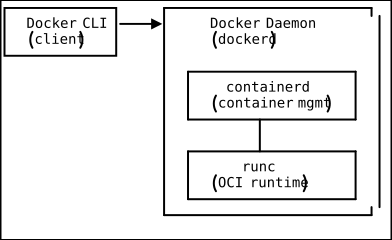
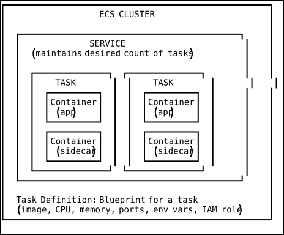
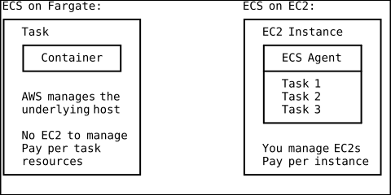
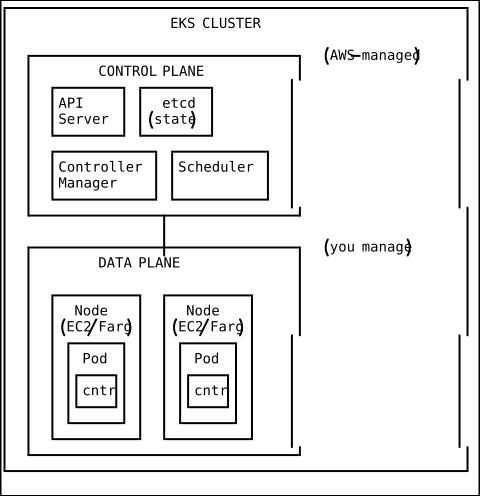
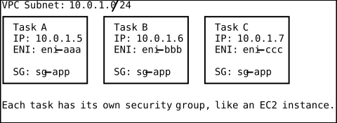
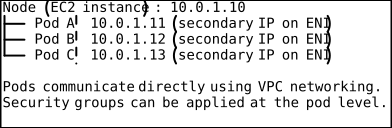
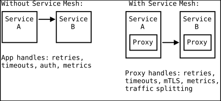

Container Architecture
Introduction
Containers have fundamentally changed how software is built, shipped, and run. Before containers, deploying an application meant managing a complex web of dependencies, library versions, and OS configurations across environments. The infamous “it works on my machine” problem plagued every development team. Containers solve this by packaging an application with its entire runtime environment into a single, portable, immutable artifact.
But containers are not virtual machines. They are lighter, faster, and more ephemeral. Understanding the Linux primitives that make containers possible — namespaces, cgroups, and union filesystems — is essential for troubleshooting, security, and performance optimization. This document covers container fundamentals through production orchestration with ECS and EKS.
Container Fundamentals
What Makes a Container?
A container is a process (or group of processes) running on a host OS with three forms of isolation:

Linux Namespaces
Namespaces provide isolation. Each namespace type isolates a different resource:
| Namespace | Isolates | Example |
|---|---|---|
| PID | Process IDs | Container sees PID 1 as its init |
| NET | Network stack | Own IP, ports, routing table |
| MNT | Mount points | Own filesystem view |
| UTS | Hostname | Container has its own hostname |
| IPC | Inter-process communication | Shared memory, semaphores |
| USER | User and group IDs | UID 0 in container != UID 0 on host |
| CGROUP | Cgroup root | Container sees only its own cgroups |
Control Groups (cgroups)
Cgroups limit and account for resource usage:
# What cgroups enforce for a container:
CPU: Maximum CPU usage (e.g., 0.5 cores)
Memory: Maximum memory (e.g., 512 MB) — OOM killed if exceeded
I/O: Block device I/O bandwidth limits
PIDs: Maximum number of processesUnion Filesystem (OverlayFS)
Container images are composed of layers. Each layer is read-only. When a container runs, a thin read-write layer is added on top. Changes (file edits, new files) are written to this top layer, leaving the image layers untouched.

Docker Architecture
Components

- Docker CLI: User-facing commands (
docker build,docker run) - Docker Daemon (dockerd): Background service that manages images, containers, networks, and volumes
- containerd: Industry-standard container runtime that manages the complete container lifecycle
- runc: Low-level OCI runtime that actually creates and runs containers using Linux primitives
Multi-Stage Builds
Multi-stage builds reduce image size by separating build dependencies from runtime:
# Stage 1: Build
FROM golang:1.22 AS builder
WORKDIR /app
COPY go.mod go.sum ./
RUN go mod download
COPY . .
RUN CGO_ENABLED=0 GOOS=linux go build -o /server
# Stage 2: Runtime (tiny image, no build tools)
FROM gcr.io/distroless/static-debian12
COPY --from=builder /server /server
EXPOSE 8080
ENTRYPOINT ["/server"]
# Result: ~15 MB image instead of ~800 MB with full Go toolchainImage Best Practices
DO: DON'T:
✓ Use specific base image tags ✗ Use :latest in production
(python:3.12.3-slim) (non-reproducible)
✓ Use multi-stage builds ✗ Install dev tools in prod image
✓ Run as non-root user ✗ Run as root (security risk)
✓ Use .dockerignore ✗ Copy entire repo into image
✓ Order layers by change frequency ✗ COPY . before RUN pip install
(deps first, code last) (invalidates cache on every change)
✓ Use HEALTHCHECK instruction ✗ Rely on container start = healthy
✓ Scan images for vulnerabilities ✗ Use unvetted base images
Amazon ECR (Elastic Container Registry)
ECR is a fully managed Docker container registry. It integrates with IAM for authentication and supports image scanning, lifecycle policies, and cross-region replication.
# Authenticate Docker to ECR
aws ecr get-login-password --region us-east-1 | \
docker login --username AWS --password-stdin \
123456789012.dkr.ecr.us-east-1.amazonaws.com
# Build and push an image
docker build -t myapp:v1.2.3 .
docker tag myapp:v1.2.3 123456789012.dkr.ecr.us-east-1.amazonaws.com/myapp:v1.2.3
docker push 123456789012.dkr.ecr.us-east-1.amazonaws.com/myapp:v1.2.3
# Enable image scanning on push
aws ecr put-image-scanning-configuration \
--repository-name myapp \
--image-scanning-configuration scanOnPush=true
# Lifecycle policy: keep only last 10 images
aws ecr put-lifecycle-policy \
--repository-name myapp \
--lifecycle-policy-text '{
"rules": [{
"rulePriority": 1,
"description": "Keep last 10 images",
"selection": {
"tagStatus": "any",
"countType": "imageCountMoreThan",
"countNumber": 10
},
"action": {"type": "expire"}
}]
}'Amazon ECS Architecture
Core Concepts

Cluster: Logical grouping of tasks and services. Task Definition: A blueprint (like a docker-compose file) specifying containers, resources, networking, and IAM roles. Task: A running instance of a task definition (one or more containers). Service: Ensures a desired number of tasks are running, handles deployments and load balancer integration.
ECS on Fargate vs EC2

| Aspect | Fargate | EC2 |
|---|---|---|
| Server management | None | You manage EC2 instances |
| Pricing | Per vCPU + memory per second | EC2 instance pricing |
| GPU support | No | Yes |
| Spot pricing | Fargate Spot (70% savings) | EC2 Spot instances |
| Max task size | 16 vCPU, 120 GB RAM | Limited by instance type |
| Boot time | ~30-60 seconds | Instant (container on host) |
| Persistent storage | EFS (no EBS) | EBS + EFS + instance store |
| Networking | awsvpc only | awsvpc, bridge, host, none |
Task Definition Example
{
"family": "myapp",
"networkMode": "awsvpc",
"requiresCompatibilities": ["FARGATE"],
"cpu": "1024",
"memory": "2048",
"executionRoleArn": "arn:aws:iam::123456789012:role/ecsTaskExecutionRole",
"taskRoleArn": "arn:aws:iam::123456789012:role/myapp-task-role",
"containerDefinitions": [
{
"name": "app",
"image": "123456789012.dkr.ecr.us-east-1.amazonaws.com/myapp:v1.2.3",
"portMappings": [{"containerPort": 8080, "protocol": "tcp"}],
"healthCheck": {
"command": ["CMD-SHELL", "curl -f http://localhost:8080/health || exit 1"],
"interval": 15,
"timeout": 5,
"retries": 3,
"startPeriod": 60
},
"logConfiguration": {
"logDriver": "awslogs",
"options": {
"awslogs-group": "/ecs/myapp",
"awslogs-region": "us-east-1",
"awslogs-stream-prefix": "app"
}
},
"secrets": [
{
"name": "DB_PASSWORD",
"valueFrom": "arn:aws:secretsmanager:us-east-1:123456789012:secret:myapp/db-password"
}
],
"environment": [
{"name": "NODE_ENV", "value": "production"},
{"name": "PORT", "value": "8080"}
]
}
]
}Amazon EKS Architecture
What Is EKS?
Elastic Kubernetes Service is a managed Kubernetes control plane. AWS runs the Kubernetes API server, etcd, and other control plane components. You manage the worker nodes (or use Fargate for serverless pods).
Architecture

Kubernetes Core Concepts
Pod: The smallest deployable unit. Contains one or more containers that share network and storage. Usually one main container plus optional sidecars.
Deployment: Manages ReplicaSets and provides declarative updates for pods. Rolling updates, rollbacks, and scaling are built in.
Service: Provides a stable network endpoint for a set of pods. Types: ClusterIP (internal), NodePort (external via node port), LoadBalancer (provisions AWS NLB/ALB).
Ingress: HTTP/HTTPS routing to services. In EKS, the AWS Load Balancer Controller provisions ALBs from Ingress resources.
Horizontal Pod Autoscaler (HPA): Scales pod count based on CPU, memory, or custom metrics.
Vertical Pod Autoscaler (VPA): Adjusts CPU/memory requests for pods based on actual usage.
EKS Deployment Example
# deployment.yaml
apiVersion: apps/v1
kind: Deployment
metadata:
name: myapp
namespace: production
spec:
replicas: 3
strategy:
type: RollingUpdate
rollingUpdate:
maxSurge: 1
maxUnavailable: 0
selector:
matchLabels:
app: myapp
template:
metadata:
labels:
app: myapp
spec:
serviceAccountName: myapp-sa # IAM Roles for Service Accounts (IRSA)
containers:
- name: app
image: 123456789012.dkr.ecr.us-east-1.amazonaws.com/myapp:v1.2.3
ports:
- containerPort: 8080
resources:
requests:
cpu: 250m
memory: 512Mi
limits:
cpu: 500m
memory: 1Gi
readinessProbe:
httpGet:
path: /health
port: 8080
initialDelaySeconds: 10
periodSeconds: 5
livenessProbe:
httpGet:
path: /health
port: 8080
initialDelaySeconds: 30
periodSeconds: 10
---
apiVersion: v1
kind: Service
metadata:
name: myapp-svc
namespace: production
spec:
type: ClusterIP
selector:
app: myapp
ports:
- port: 80
targetPort: 8080
---
apiVersion: networking.k8s.io/v1
kind: Ingress
metadata:
name: myapp-ingress
namespace: production
annotations:
kubernetes.io/ingress.class: alb
alb.ingress.kubernetes.io/scheme: internet-facing
alb.ingress.kubernetes.io/target-type: ip
alb.ingress.kubernetes.io/certificate-arn: arn:aws:acm:...
spec:
rules:
- host: app.example.com
http:
paths:
- path: /
pathType: Prefix
backend:
service:
name: myapp-svc
port:
number: 80Container Networking
ECS awsvpc Mode
Each task gets its own Elastic Network Interface (ENI) with a private IP in your VPC subnet. This is the only networking mode supported on Fargate and the recommended mode for EC2 launch type.

Kubernetes Pod Networking (Amazon VPC CNI)
The Amazon VPC CNI plugin assigns VPC IP addresses directly to pods. Each pod gets a real VPC IP, enabling direct communication with other VPC resources without NAT.

Service Mesh
What Is a Service Mesh?
A service mesh manages service-to-service communication in a microservices architecture. It handles traffic management, security (mTLS), and observability transparently via sidecar proxies.

AWS App Mesh and Istio are the primary service mesh options on EKS.
Container Security
Image Security
# Scan ECR image for vulnerabilities
aws ecr start-image-scan \
--repository-name myapp \
--image-id imageTag=v1.2.3
# Get scan findings
aws ecr describe-image-scan-findings \
--repository-name myapp \
--image-id imageTag=v1.2.3 \
--query 'imageScanFindings.findingSeverityCounts'Runtime Security Best Practices
- Run as non-root: Set
USERin Dockerfile,runAsNonRoot: truein K8s - Read-only root filesystem:
readOnlyRootFilesystem: true - Drop all capabilities:
drop: ["ALL"], add back only what is needed - No privilege escalation:
allowPrivilegeEscalation: false - Use distroless or scratch base images: Minimal attack surface
- Scan images in CI/CD: Fail builds with critical vulnerabilities
# Kubernetes security context
securityContext:
runAsNonRoot: true
runAsUser: 1000
readOnlyRootFilesystem: true
allowPrivilegeEscalation: false
capabilities:
drop: ["ALL"]ECS vs EKS Decision Matrix
| Criterion | ECS | EKS |
|---|---|---|
| Complexity | Lower (AWS-native) | Higher (Kubernetes) |
| Learning curve | Gentle | Steep |
| Portability | AWS only | Multi-cloud (K8s standard) |
| Ecosystem | AWS tools | Vast CNCF ecosystem |
| Team expertise | AWS-focused teams | K8s-experienced teams |
| Advanced scheduling | Basic | Highly flexible |
| Service mesh | App Mesh | Istio, Linkerd, App Mesh |
| Fargate support | Full | Full |
| Managed node groups | N/A (Fargate or EC2 ASG) | Yes (EKS Managed Nodes) |
| Cost (control plane) | Free | 73/mo) |
| GitOps | Limited | ArgoCD, Flux |
| Batch workloads | Good | Excellent (Argo Workflows) |
Choose ECS when: Your team is AWS-native, you want simplicity, you do not need Kubernetes portability, and your orchestration needs are straightforward.
Choose EKS when: Your team knows Kubernetes, you need multi-cloud portability, you want access to the CNCF ecosystem, or you have complex scheduling requirements.
Practical Takeaways
-
Start with Fargate unless you need GPUs, specific instance types, or EBS volumes. Fargate eliminates all node management.
-
Use multi-stage builds to keep images small. Smaller images pull faster, reduce storage costs, and have a smaller attack surface.
-
Never use
:latesttag in production. Always pin to a specific version (e.g.,v1.2.3or a SHA digest) for reproducibility. -
Set resource requests AND limits in Kubernetes. Without requests, the scheduler cannot make informed placement decisions. Without limits, a runaway container can consume all node resources.
-
Use readiness probes to prevent traffic from reaching containers that are not ready. Use liveness probes to restart stuck containers. Do not make liveness probes hit external dependencies (database, cache) — that causes cascading restarts.
-
Store secrets in AWS Secrets Manager or Parameter Store, not in environment variables in task definitions. Use ECS secrets injection or the Kubernetes Secrets Store CSI Driver.
-
Implement image lifecycle policies in ECR to automatically clean up old images. Untagged and outdated images accumulate and increase storage costs.
-
Run containers as non-root. This single practice mitigates a large class of container escape vulnerabilities.
DSA Connections
Bin Packing — Kubernetes Scheduler and ECS Task Placement
Bin packing is an NP-hard combinatorial optimization problem: given items of varying sizes and bins of fixed capacity, pack the items into the fewest bins possible. The Kubernetes scheduler and ECS task placement engine both solve a multi-dimensional bin packing variant where each “item” (pod or task) has CPU and memory requirements, and each “bin” (node or EC2 instance) has finite capacity. When you define resources.requests.cpu: 250m and resources.requests.memory: 512Mi in a Kubernetes deployment, the scheduler must find a node where these resources fit alongside existing pods. The scheduler uses heuristics like LeastRequestedPriority (spread workloads) or MostRequestedPriority (pack tightly for cost efficiency) — directly analogous to the first-fit-decreasing and best-fit-decreasing heuristics from bin packing literature. ECS’s binpack placement strategy explicitly names the algorithm: it places tasks on the instance with the least available resources that still fits the task, minimizing the number of running instances. This is why right-sizing resource requests matters so much — overestimating is like declaring items larger than they are, wasting bin capacity and increasing infrastructure cost.
Directed Acyclic Graphs (DAGs) — Container Image Layer Dependencies and Build Ordering
A directed acyclic graph (DAG) is a graph with directed edges and no cycles, commonly used to model dependency relationships. Docker image builds are DAGs: each instruction in a Dockerfile creates a layer that depends on all preceding layers, and multi-stage builds introduce multiple dependency chains that merge at COPY --from directives. The Docker build engine performs a topological sort on this DAG to determine the correct build order and to identify which layers can be cached. When you structure a Dockerfile with COPY go.mod and RUN go mod download before COPY . ., you are designing the DAG so that the dependency-download node has few incoming edges that change frequently, maximizing cache reuse. Kubernetes Helm charts and ECS task definitions with init containers also form DAGs: init containers must complete (in dependency order) before the main container starts, and the orchestrator topologically sorts them to determine execution sequence.
Union-Find (Disjoint Set Union) — Container Network Namespace Isolation
Union-Find is a data structure that maintains a collection of disjoint sets, supporting near-O(1) union and find operations with path compression and union by rank. The Linux kernel’s namespace mechanism, which underpins container isolation, conceptually operates on disjoint sets: each container’s PID namespace, network namespace, and mount namespace form a separate partition of system resources. When Container A and Container B each have their own NET namespace, they belong to disjoint sets in the network resource space — Container A’s port 8080 is completely independent of Container B’s port 8080. The Kubernetes VPC CNI plugin extends this: each pod gets its own network namespace with a unique VPC IP address, creating disjoint network identities that can be individually addressed and secured with security groups. Understanding namespace isolation as disjoint sets clarifies why containers sharing a pod (same network namespace) can communicate via localhost — they have been “unioned” into the same set — while containers in different pods cannot, because they remain in separate partitions.
Graph-Based Dependency Resolution — Kubernetes Deployment Rollout Strategy
Kubernetes deployments with rolling update strategies model the update process as a constrained graph traversal. The deployment controller maintains a state graph where each node represents a pod version (old or new) and transitions must satisfy the constraints maxSurge (maximum extra pods above desired count) and maxUnavailable (maximum pods that can be unavailable). With maxSurge: 1 and maxUnavailable: 0, the controller follows a strict path: create one new pod, wait until it passes readiness checks, then terminate one old pod, repeating until all pods are updated. This is a constrained BFS through the state space of (running_old, running_new) pairs, where each transition must keep total available pods >= desired count. The Kubernetes scheduler’s affinity and anti-affinity rules further constrain this graph — a pod with podAntiAffinity to other pods of the same deployment cannot be placed on a node that already hosts a sibling, pruning certain paths from the traversal and ensuring fault-domain distribution across nodes and AZs.